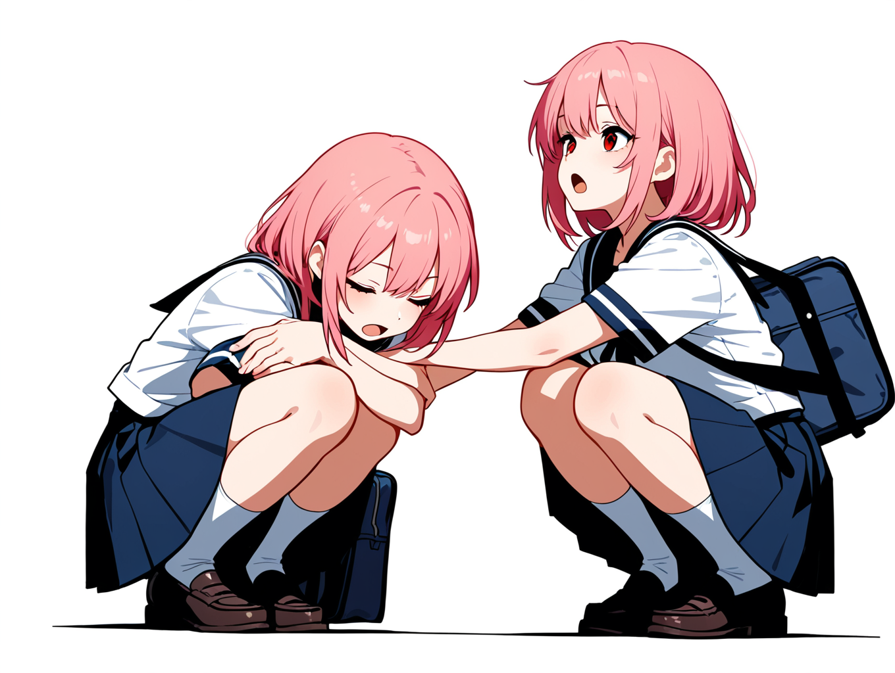

操作説明マニュアル
Mineの基本操作をステップバイステップで解説します。
ゲームの目的
地雷が埋まっていないすべてのマスを開くことが目標です。
地雷のあるマスを誤って開いてしまうとゲームオーバーになります。
すべての地雷に旗を立て、残りのマスをすべて開くとクリアです！
1. ゲームを開始する

ゲームを起動すると、難易度選択画面が表示されます。
初めての方は5x6マスから始めることをお勧めします。
難易度を選んで[START]クリックするとゲームが開始します。
2. 最初のマスを開く

マインスイーパーの第一歩は、最初のマスを開くことです。
- 左クリックでマスを開きます
- 最初にクリックしたマスは必ず安全です（地雷は配置されません）
- 数字が表示されたら、それは周囲8マスにある地雷の数を示しています
3. 地雷の位置を推測する
表示された数字をヒントに、地雷の位置を推測していきます。確実に地雷だと判断したマスには旗を立てましょう。
- 右クリックで旗を立てる/解除する
- 画面上部の数字は、まだ見つかっていない地雷の数を表示しています
- 旗を立てると残り地雷数のカウントが減ります
4. 周囲のマスを一括で開く
数字が表示されているマスの周囲に、その数字分の旗を立てたら、残りのマスを一括で開くことができます。
- ホイールクリック（またはマウス中央ボタン）で周囲のマスを一括で開く
- この操作は、数字が表示されているマスでのみ有効です
- 旗の数が表示されている数字と一致していない場合は何も起こりません
5. 3D視点を操作する

Mineは3D環境で遊べるマインスイーパーです。視点を変えることで、より戦略的にゲームを進めることができます。
- W/A/S/D - カメラ視点の移動
- Q/E - カメラを左右に回転
- マウスホイール - ズームイン/アウト
- ESCキー - ゲームメニューを開く